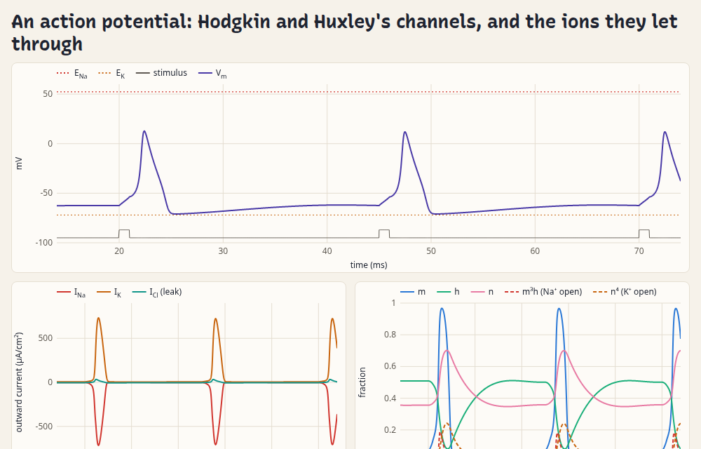
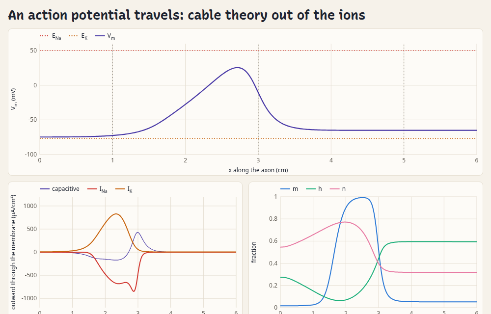
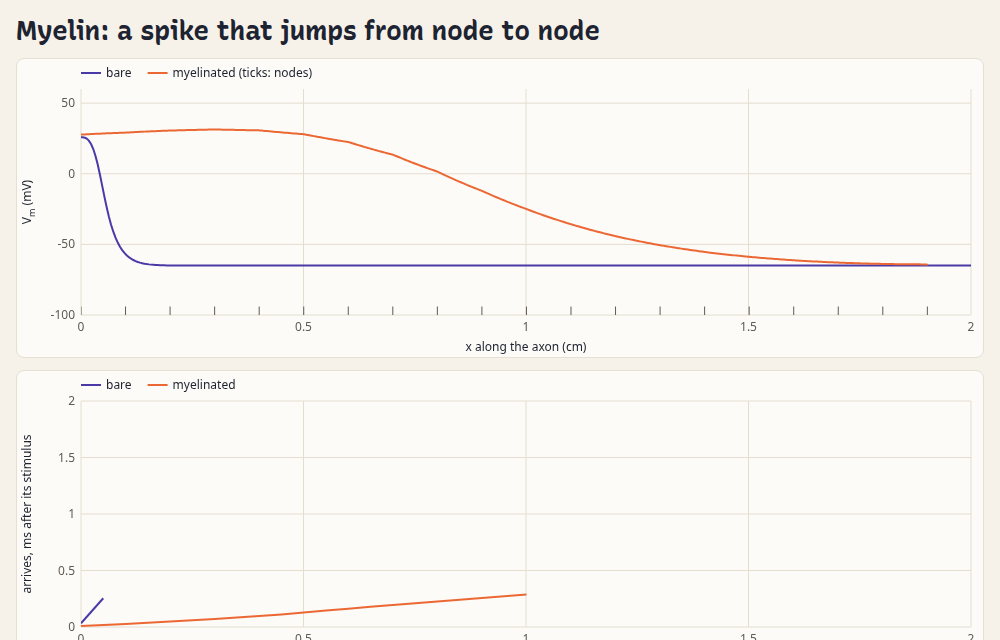

Charged species drifting through one-dimensional devices, solved live in your browser.
driftlet is a small JavaScript library with no dependencies. A pn junction, a battery and a nerve look like different subjects, but to driftlet they're one problem with a different cast: electrons and holes, or ions, each drifting and diffusing down its own electrochemical potential, reacting, and crossing interfaces.
Each page builds its device with driftlet/kit, solves it as you move the controls, and draws
what you'd measure (an I–V curve, a voltammogram, a discharge), mostly against closed-form theory as a check.
Beneath it are the level diagrams and profiles across the device, on one x axis. Every page shows its whole
script at the bottom, as a worked example to copy. The stamp on a card names what its page is drawn against
(✓), or what the test suite checks it against.
Semiconductorse⁻h⁺excitonvacancy⁺


Electrochemistrye⁻Fe³⁺Ag⁺NO₃⁻Zn²⁺Li⁺


Ions at interfacesK⁺H⁺Cl⁻fixed charge


Cells and nervesNa⁺K⁺Cl⁻gates



